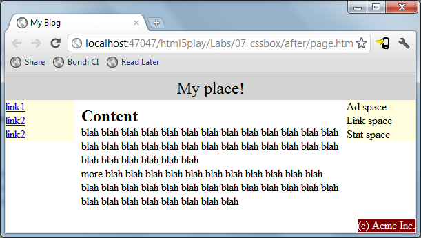

In the before directory of this lab you'll find a page.html file, and two .css files.
Your goal is to make changes in the .css files to achieve the following layout.

In the traditional.css file you can use absolute positioning to achieve the goal.
In the flex.css file you can use the new flexible box model to achieve the goal. Of course you'll need to comment out the traditional.css link from page.html and uncomment the flex.css link first.
As always, you can peek in the after directory for help.